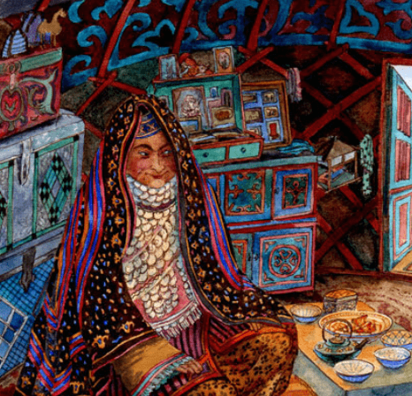

Татарская мифология по своей сути является частью мусульманской мифологии[. От доисламских мифологических сюжетов сохранились некоторые образы мифологии нижнего мира. Некоторые мифологические персонажи связаны с древними традициями коренных народов Поволжья, входящих в состав татар (например, велико влияние марийской и удмуртской мифологии). Древнетюркские и персидские мифологические воззрения слабо отражены в татарской мифологии. Многие персонажи нижнего мира мифологии татар и Башкортостана неизвестны большинству других тюркских народов.

Кто же это?
Шурале Представляется в виде обросшего волосами мужчины с длинными пальцами, иногда с рогом во лбу, или обнаженной женщины. Боится собак, воды: при встрече с ним нужно бежать к ручью или озеру. Заманивает людей в лесную чащу, может защекотать до смерти.
